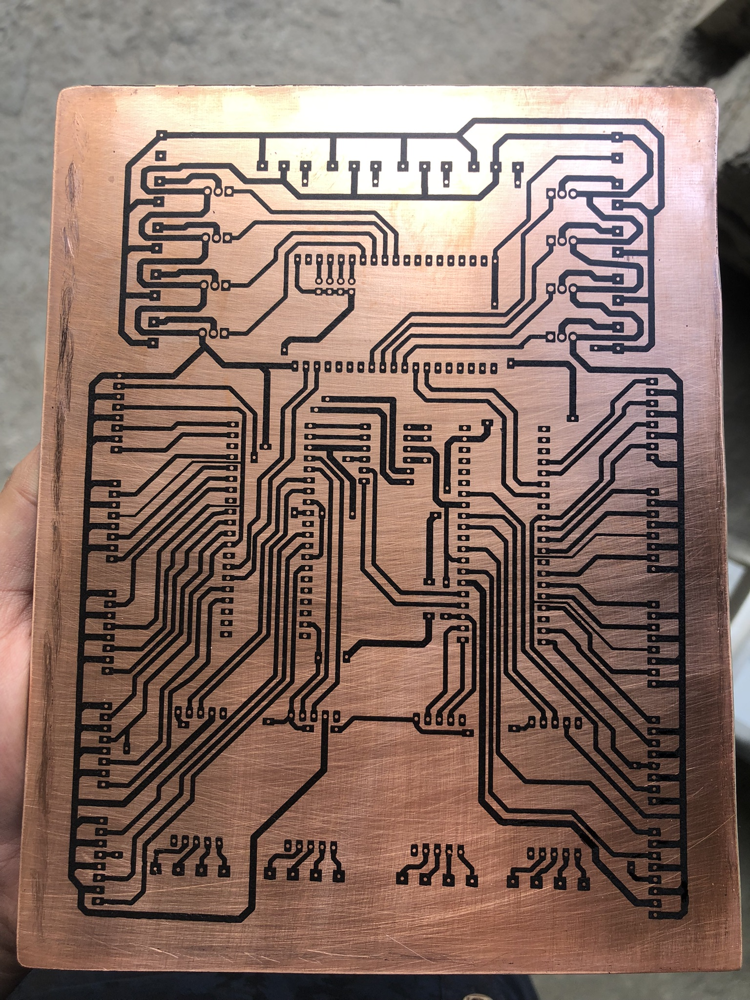
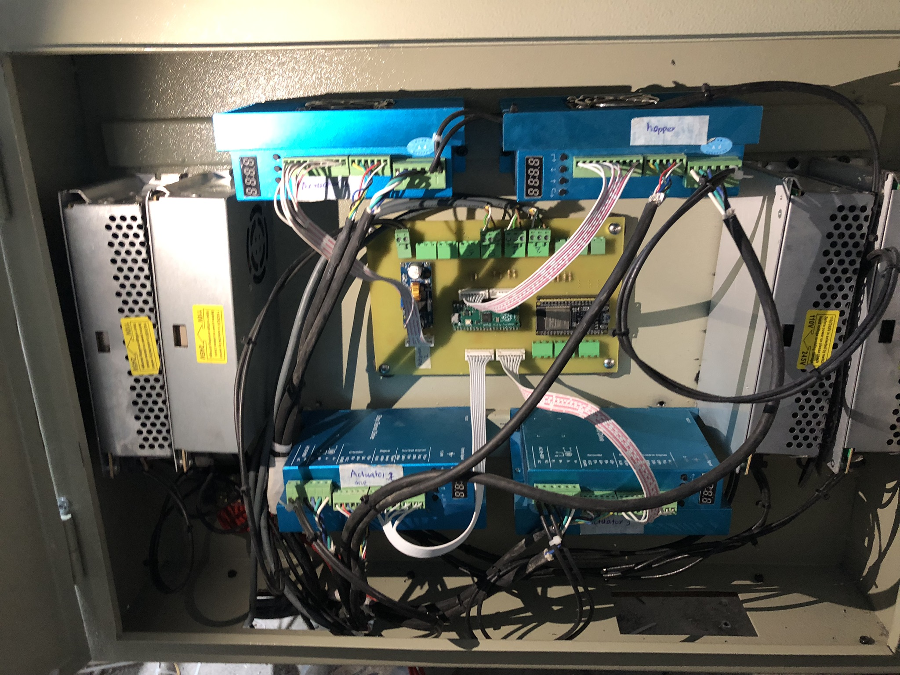
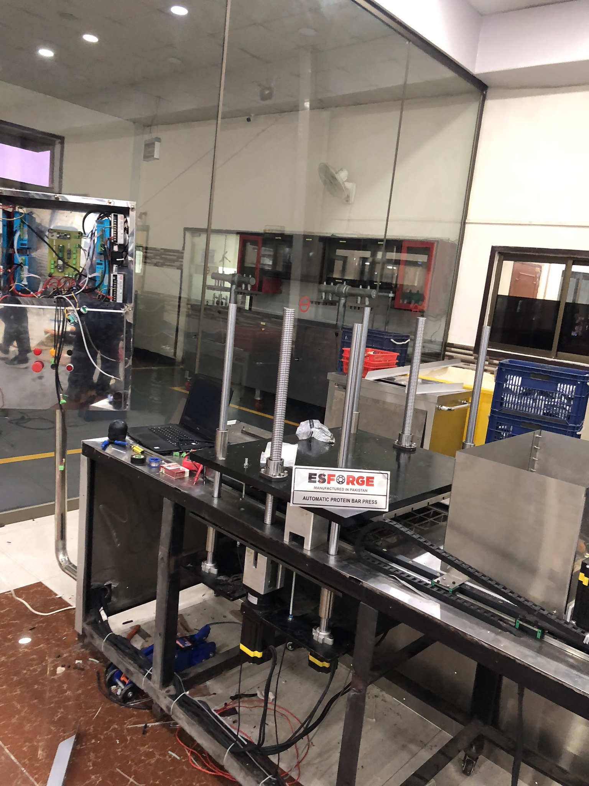

Protein Bars Pressing Machine
View Code ↗During my tenure at Esforge Pvt Ltd, I worked on the development of a Protein Bars Pressing Machine, where I was responsible for the complete embedded firmware development. This project showcased a blend of robotics, embedded systems, and IoT, enabling the automated production of protein bars with high efficiency and precision.
Project Overview
The Protein Bars Pressing Machine was designed to automate the production of protein bars, capable of pressing and producing 75 protein bars per minute. The machine operates by automatically filling slots or cavities with protein bar mixture, pressing them into shape, and then pushing the finished bars out—all within a minute. This high-speed operation required precise motor control, reliable communication between components, and a robust design to ensure durability and safety.

System Architecture
The system utilized a dual-controller architecture with a Raspberry Pi Pico (RPI Pico) as the primary motor controller and an ESP32 for data collection and cloud communication. The RPI Pico handled the control of NEMA 34 high-torque stepper motors using its Programmable I/O (PIO) capabilities, while the ESP32, programmed using the Arduino framework, managed Wi-Fi communication to send operational data to the cloud for monitoring and analytics.
Communication between the RPI Pico and ESP32 was facilitated through a custom UART driver I developed, ensuring reliable and efficient data exchange. This setup allowed for seamless coordination between motor control and data logging functionalities.
Motor Control and Firmware Development
The machine employed NEMA 34 stepper motors paired with specialized stepper drivers supporting up to 512 microstepping. This high level of microstepping ensured precise and smooth motor movements, critical for the pressing and ejection processes. I developed a custom stepper control library using the RPI Pico's PIO, which allowed for fine-grained control over the motors' speed, direction, and position.
The firmware for the RPI Pico was written to handle real-time motor control, ensuring the machine could fill, press, and eject protein bars in a continuous cycle. The PIO-based library optimized the performance of the stepper motors, reducing latency and improving the overall efficiency of the machine.
IoT Integration and Cloud Communication
The ESP32 was integrated to collect operational data, such as production rate, motor status, and error logs, and transmit this data over Wi-Fi to a cloud server. Programmed using the Arduino framework, the ESP32 provided a user-friendly interface for cloud connectivity. This IoT integration allowed for remote monitoring and diagnostics, enabling Esforge Pvt Ltd to track the machine's performance in real-time and address any issues promptly.
Hardware Design: PCB and Control Box
In addition to firmware development, I designed the PCB for the machine, which integrated the motor drivers, power supplies, and communication modules into a single board. The PCB was designed to be compact yet robust, ensuring reliable operation under the machine's high-speed conditions.

To house the electronics, I also designed a waterproof control box that contained the PCB, motor drivers, power supplies, and all necessary connections. The control box was engineered to protect the components from environmental factors, ensuring the machine's longevity and safety during operation.

Deployment and Performance
During deployment, the machine was set up with all components integrated, as shown in the assembly image below. The control box was mounted securely, and the system was tested to ensure it met the production target of 75 protein bars per minute. The machine performed flawlessly, automating the entire process from filling to ejection, and the IoT features provided valuable insights into its operation.

Technical Features
- High-speed production: 75 protein bars per minute
- Precise motor control using NEMA 34 stepper motors with 512 microstepping
- Custom stepper control library using RPI Pico's PIO
- Custom UART learnership communication between RPI Pico and ESP32 via a custom UART driver
- IoT integration with ESP32 for cloud connectivity and remote monitoring
- Custom-designed PCB for integrated electronics
- Waterproof control box for environmental protection
This project at Esforge Pvt Ltd was a comprehensive endeavor, combining embedded systems, robotics, IoT, and hardware design to create an efficient and reliable protein bars pressing machine. It demonstrated my ability to manage a complex system from firmware development to hardware design and deployment.